目录
虽然目前最流行和最成功的模型架构大多由人类专家设计，但这并不意味着我们已经探索完整个网络架构空间并找到了最佳方案。如果采用系统化、自动化的方式来学习高性能模型架构，我们将有更大机会找到最优解。
自动学习和演化网络拓扑并不是一个新想法（Stanley & Miikkulainen, 2002）。近年来，Zoph & Le 2017 和 Baker et al. 2017 的开创性工作吸引了大量关注，推动了神经架构搜索（Neural Architecture Search，简称 NAS）领域的发展，催生了许多更好、更快且更节省成本的 NAS 方法。
在我开始研究 NAS 时，发现 Elsken 等 2019 的这篇优秀综述非常有帮助。他们将 NAS 刻画为包含三个主要组件的系统，这种表述简洁清晰，也被后续许多 NAS 论文广泛采用。
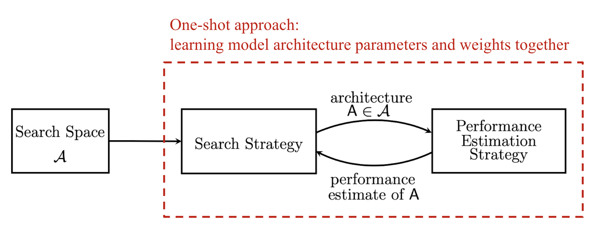
搜索空间
NAS 的搜索空间定义了一组基本的网络操作，以及这些操作如何连接以构建有效的网络架构。
序列层级操作
设计神经网络架构搜索空间最朴素的方式，是用一系列顺序的层级操作来描述网络拓扑（无论是 CNN 还是 RNN），这在 Zoph & Le 2017 和 Baker et al. 2017 的早期工作中可见。这种序列化的网络表示需要相当多的专家知识，因为每个操作都关联着不同的层特定参数，这些关联必须被硬编码。例如，在预测卷积操作后，模型需要输出核大小、步长等；而在预测全连接操作后，下一步需要预测单元数量。
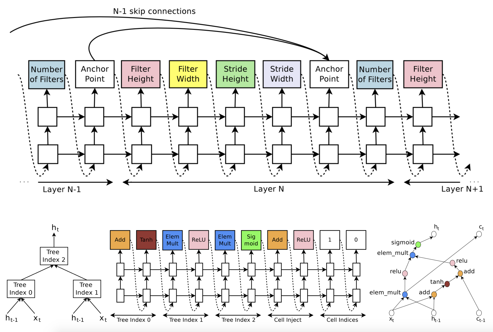
为了确保生成的架构有效，可能还需要额外规则（Zoph & Le 2017）：
跳跃连接也可以被预测，使用类似 注意？注意！ 的机制。在第 i 层，加入一个锚点，并使用 i−1 个基于内容的 sigmoid 来指示要连接哪些先前层。每个 sigmoid 以当前节点 h_i 的隐藏状态和 i-1 个先前节点 h_j, j=1, \dots, i-1 的隐藏状态作为输入。
序列搜索空间具有很强的表达能力，但它的规模非常庞大，穷举搜索需要消耗大量计算资源。在 Zoph & Le 2017 的实验中，他们并行运行了 800 个 GPU 长达 28 天，而 Baker et al. 2017 则将搜索空间限制为最多包含 2 个全连接层。
基于单元的表示
受成功视觉模型中重复使用模块的设计启发（例如 Inception、ResNet），NASNet 搜索空间（Zoph 等 2018）将卷积网络的架构定义为相同单元的多次重复，每个单元包含若干由 NAS 算法预测的操作。设计良好的单元模块能在不同数据集之间实现迁移。同时，通过调整单元重复次数可以轻松缩小或扩大模型规模。
具体来说，NASNet 搜索空间学习两种类型的单元来构建网络：
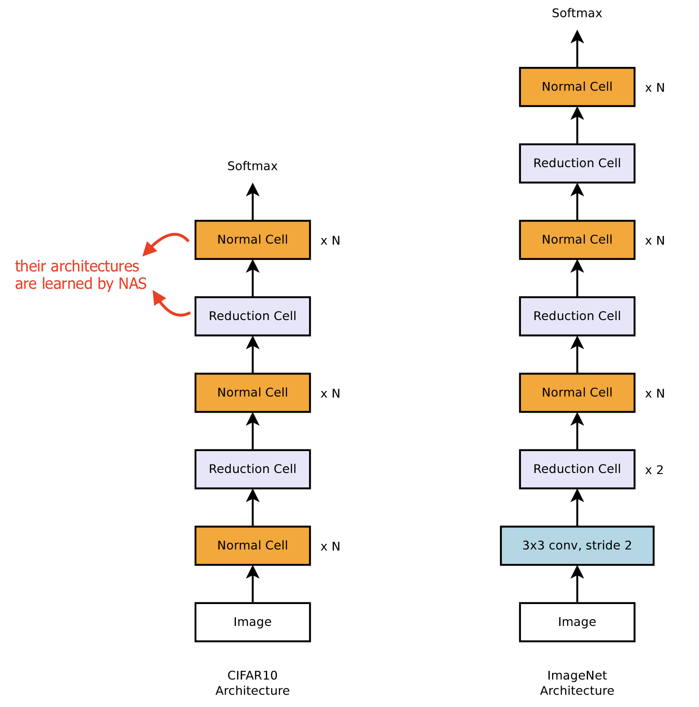
每个单元的预测被分组为 B 个块（NASNet 论文中为 B=5），每个块由 5 个不同的 softmax 分类器进行 5 步预测，对应块中各元素的离散选择。注意，NASNet 搜索空间中单元之间没有残差连接，模型仅在块内部学习跳跃连接。
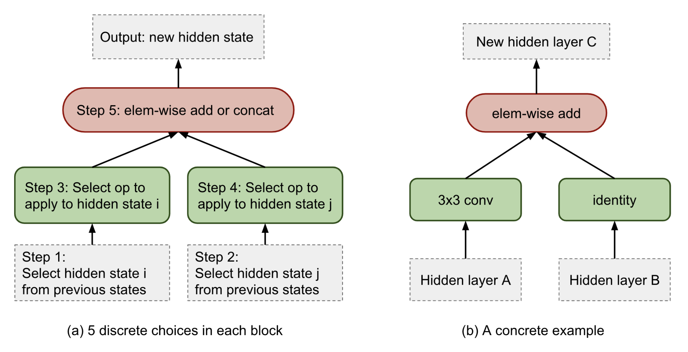
在实验中，他们发现一种改进版的 DropPath（称为 ScheduledDropPath）显著提升了 NASNet 的最终性能。DropPath 以固定概率随机丢弃路径（即 NASNet 中带操作的边）。ScheduledDropPath 则是在训练过程中线性增加丢弃路径的概率。
Elsken 等 (2019) 指出了 NASNet 搜索空间的三大优势：
层次化结构
为了利用已发现的优秀网络 motif，NAS 搜索空间可以被约束为层次化结构，例如 Hierarchical NAS（HNAS；Liu 等 2017）。它从一小组基本原语开始，包括卷积、池化、恒等映射等操作。然后由这些原语组成的小子图（或称“motif”）被递归地用于构建更高层次的计算图。
第 \ell=1, \dots, L 层的计算 motif 可以表示为 (G^{(\ell)}, \mathcal{O}^{(\ell)})，其中：
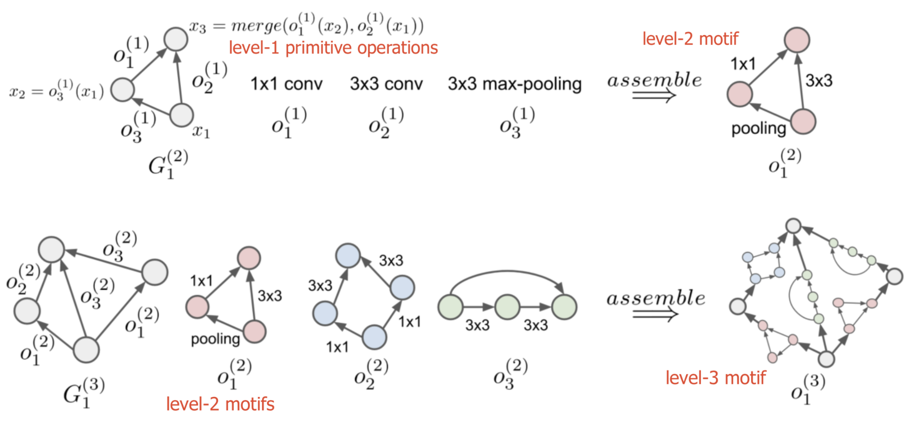
要按照层次结构构建网络，我们从最低层 \ell=1 开始，递归地定义第 \ell 层的第 m 个 motif 操作：
层次化表示变为 \Big( \big\{ \{ G_m^{(\ell)} \}_{m=1}^{M_\ell} \big\}_{\ell=2}^L, \mathcal{O}^{(1)} \Big), \forall \ell=2, \dots, L，其中 \mathcal{O}^{(1)} 包含一组基本操作。
\text{assemble}() 过程相当于按照拓扑顺序依次计算节点 i 的特征图，通过聚合其所有前驱节点 j 的特征图得到：
其中 \text{merge}[] 在 论文 中通过深度维度拼接实现。
与 NASNet 类似，Liu 等 (2017) 的实验重点在于在预定义的“宏”结构（包含重复模块）中发现良好的单元架构。他们证明，使用精心设计的搜索空间可以大幅提升简单搜索方法（例如随机搜索或进化算法）的威力。
Cai 等 (2018b) 提出了一种基于路径级网络变换的树状搜索空间。树中每个节点定义了输入拆分给子节点的分配方案，以及合并子节点结果的合并方案。当合并方案为相加或拼接时，路径级网络变换允许用多分支 motif 替换单个层。
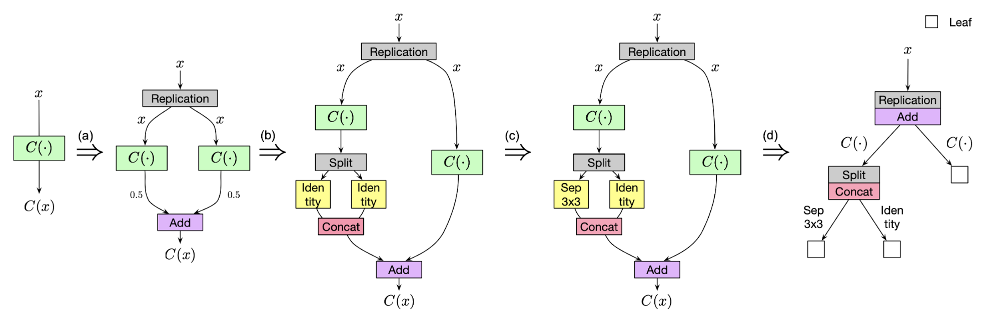
记忆库表示
Brock 等 (2017) 在 SMASH 中提出了一种前馈网络的记忆库表示。他们不再将神经网络视为操作图，而是将其视为包含多个可读写记忆块的系统。每一层操作被设计为：(1) 从一部分记忆块中读取；(2) 计算结果；(3) 将结果写入另一部分记忆块。例如，在序列模型中，单个记忆块会被持续读取和覆写。
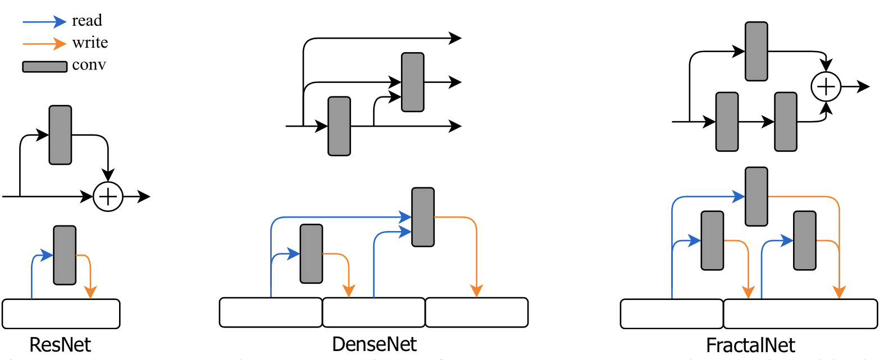
搜索算法
NAS 搜索算法采样一批子网络。它以子模型的性能指标作为奖励，并学习生成高性能的架构候选。这与超参数搜索领域有许多共通之处。
随机搜索
随机搜索是最朴素的基线。它从搜索空间中随机采样一个有效的架构候选，不涉及任何学习模型。随机搜索已在超参数搜索中证明其有效性（Bergstra & Bengio 2012）。如果搜索空间设计良好，随机搜索会成为一个极具挑战性的 baselines。
强化学习
NAS 的初始设计（Zoph & Le 2017）使用一个基于强化学习的控制器来提出待评估的子模型架构。控制器由 RNN 实现，输出可变长度的 token 序列，用于配置网络架构。
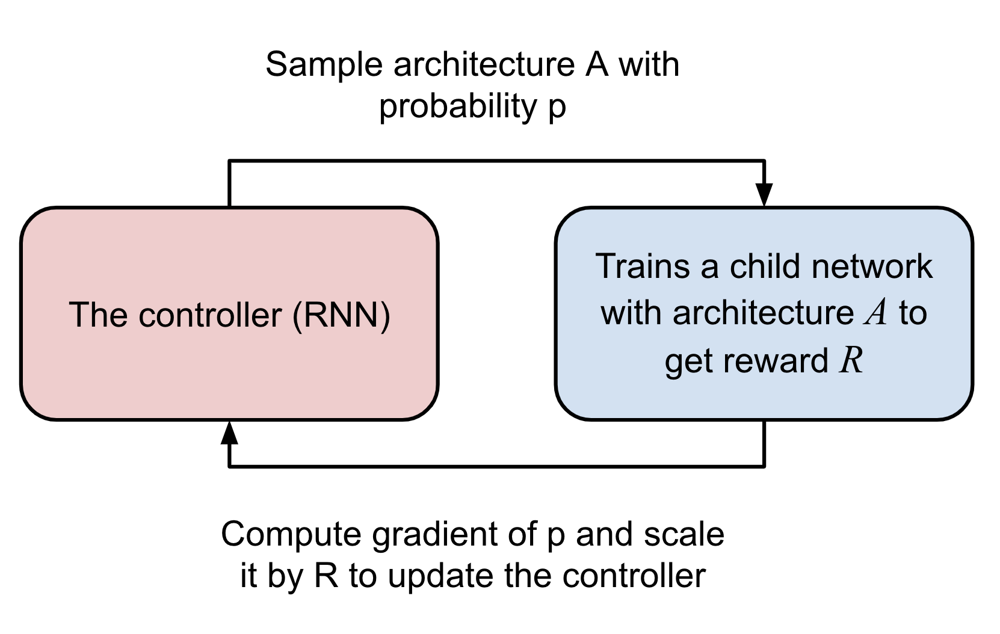
控制器通过 策略梯度算法 算法作为强化学习任务进行训练。
MetaQNN（Baker 等 2017）训练一个智能体，使用 强化学习简史（长文） 结合 多臂老虎机问题及其解决方案-greedy}} 探索策略和经验回放，顺序选择 CNN 的各层。奖励同样是验证集准确率。
其中状态 s_t 是层操作及其相关参数的元组。动作 a 决定操作之间的连接性。Q 值与两个相连操作能否带来高准确率的置信度成正比。
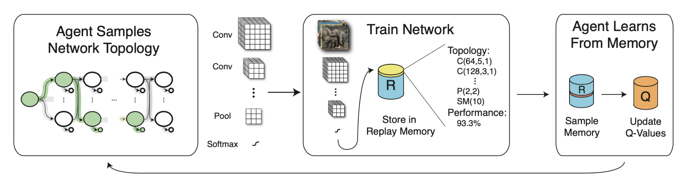
进化算法
NEAT（NeuroEvolution of Augmenting Topologies 的缩写）是由 Stanley & Miikkulainen 在 2002 年提出的使用 遗传算法 (GA) 演化神经网络拓扑的方法。NEAT 同时演化连接权重和网络拓扑。每个基因编码了配置网络的完整信息，包括节点权重和边。种群通过对权重和连接进行变异，以及两个父代基因的交叉来增长。更多关于神经演化的内容可参考 Stanley 等 (2019) 的深度 综述。
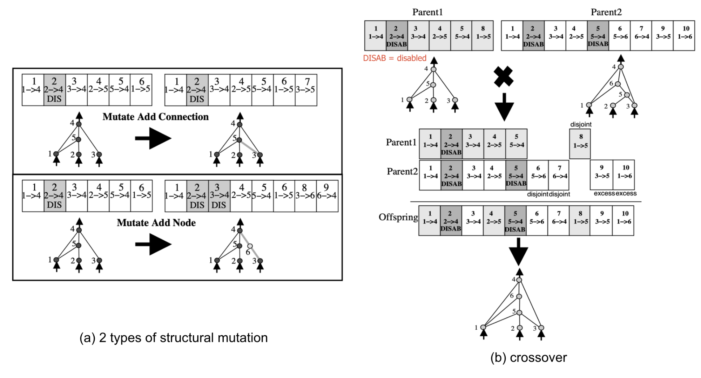
Real 等 (2018) 采用进化算法（EA）来搜索高性能网络架构，称为 AmoebaNet。他们使用 锦标赛选择 方法，在每次迭代中从随机样本集合中选出最佳候选，并将其变异后的子代放回种群。当锦标赛规模为 1 时，等价于随机选择。
AmoebaNet 修改了锦标赛选择，使其偏好更年轻的基因型，并在每个周期中始终丢弃最老的模型。这种被称为“老化演化”的方法让 AmoebaNet 能够覆盖和探索更大的搜索空间，而不会过早收敛到性能较好的模型。
具体来说，在带老化正则化的锦标赛选择的每个周期中（见图 11）：
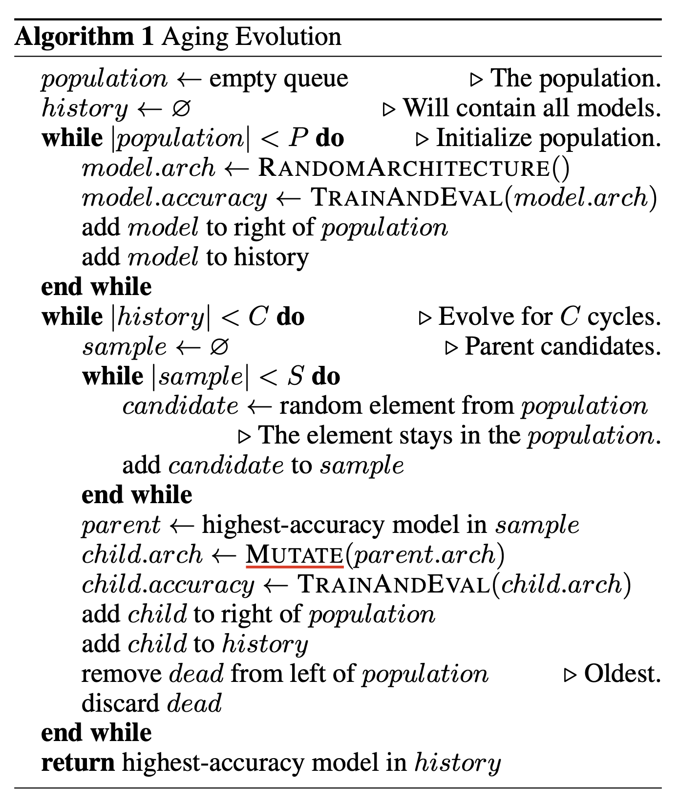
应用两种类型的变异：
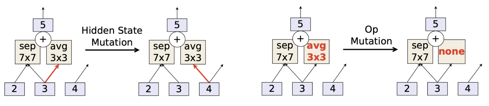
实验显示，EA 和 RL 在最终验证准确率上表现相当，但 EA 的 anytime 性能更好，且能找到更小的模型。不过，使用 EA 进行 NAS 仍然计算代价高昂，单次实验需要 450 个 GPU 运行 7 天。
HNAS（Liu 等 2017）也采用进化算法（原始锦标赛选择）作为搜索策略。在层次化结构的搜索空间中，每条边都是一个操作。因此，他们实验中的基因型变异通过将随机一条边替换为不同操作来实现。替换集合中包含 none 操作，因此可以改变、移除或添加边。初始基因型集合通过对“平凡”motif（全为恒等映射）进行大量随机变异得到。
渐进决策过程
构建模型架构是一个顺序过程。每增加一个算子或层都会带来额外复杂度。如果我们引导搜索模型从简单模型开始，逐步演化到更复杂的架构，就相当于在搜索模型的学习过程中引入 。强化学习课程
渐进式 NAS（PNAS；Liu 等 2018）将 NAS 问题建模为一个逐步寻找复杂度递增模型的过程。PNAS 没有使用 RL 或 EA，而是采用基于序列模型的贝叶斯优化（SMBO）作为搜索策略。PNAS 类似于 A* 搜索，从简单模型开始搜索，同时学习一个代理函数来引导搜索。
A* 搜索算法（“最佳优先搜索”）是一种常用的路径寻找算法。其问题被定义为在带权图中找到从起始节点到目标节点的最小代价路径。在每次迭代中，A* 通过最小化 f(n)=g(n)+h(n) 来选择要扩展的路径，其中 n 是下一个节点，g(n) 是从起点到 n 的代价，h(n) 是启发式函数，用于估计从节点 n 到目标的最小代价。
PNAS 使用 NASNet 搜索空间。每个块被定义为 5 元组，PNAS 只考虑逐元素相加作为第 5 步的组合操作，不使用拼接。与固定块数 B 不同，PNAS 从 B=1（每个单元只有一个块的模型）开始，逐步增加 B。
验证集上的性能被用作反馈来训练一个代理模型，用于预测新架构的性能。有了这个预测器，我们就可以决定接下来优先评估哪些模型。由于性能预测器需要能处理不同大小的输入、准确率，且样本高效，他们最终选择了 RNN 模型。
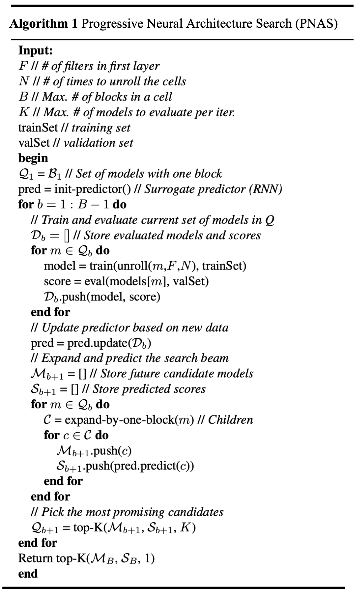
梯度下降
使用梯度下降更新架构搜索模型需要将离散操作的选择过程变得可微。这些方法通常将架构参数和网络权重的学习合并到一个模型中。更多细节见“单次”方法部分。
评估策略
我们需要对每个子模型进行性能测量、估计或预测，以便为优化搜索算法提供反馈。候选评估过程可能非常昂贵，因此提出了许多新的评估方法来节省时间或计算。在评估子模型时，我们主要关心其在验证集上的准确率。最近的工作也开始考虑模型的其他因素，如模型大小和延迟，因为某些设备可能对内存或响应时间有严格限制。
从零训练
最朴素的方法是将每个子网络独立地从零训练至收敛，然后在验证集上测量其准确率（Zoph & Le 2017）。这种方法能提供可靠的性能数据，但完成一次“训练-收敛-评估”的循环只能为 RL 控制器生成一个训练样本（更不用说 RL 本身通常样本效率很低）。因此计算消耗极大。
代理任务性能
有几种方法使用代理任务的性能作为子网络的性能估计器，通常计算成本更低、速度更快：
参数共享
与其为每个子模型从零独立训练，你可能会问：如果在它们之间建立依赖关系并复用权重呢？一些研究者成功让这种方法发挥了作用。
受 Net2net 变换的启发，Cai 等 (2017) 提出了高效架构搜索（EAS）。EAS 设置了一个称为元控制器的 RL 智能体，来预测保持功能的网络变换，从而增加网络深度或层宽度。由于网络是增量增长的，之前验证过的网络权重可以被复用以进一步探索。借助继承的权重，新构建的网络只需进行轻量级的训练即可。
元控制器根据当前网络架构（用可变长字符串表示）学习生成网络变换动作。为了处理可变长度的架构配置，元控制器被实现为双向循环网络。多个 actor 网络输出不同的变换决策：
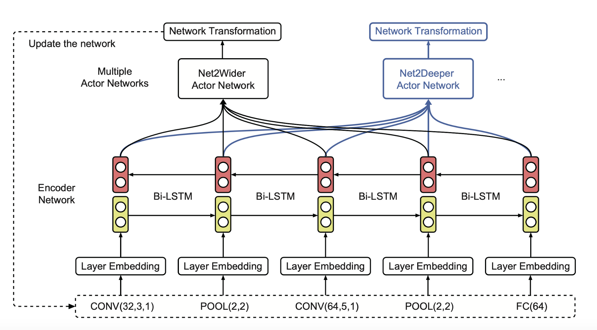
出于类似动机，高效 NAS（ENAS；Pham 等 2018）通过在子模型之间激进地共享参数，将 NAS 加速了约 1000 倍。ENAS 的核心思想是：所有采样得到的架构图都可以看作一个更大超图的子图。所有子网络共享这个超图的权重。
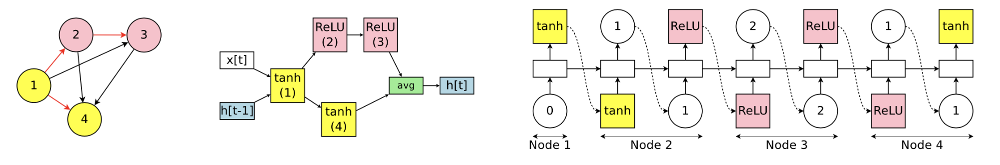
ENAS 在训练共享模型权重 \omega 和训练控制器 \theta 之间交替进行：
基于预测
常规的子模型评估循环是通过标准梯度下降更新模型权重。而 SMASH（Brock 等 2017）提出了一个不同且有趣的想法：我们能否直接根据网络架构参数预测模型权重？
他们使用 HyperNet（Ha 等 2016）直接根据架构配置的编码生成模型权重。然后直接验证带有 HyperNet 生成权重的模型。注意，我们不需要为每个子模型额外训练，但需要训练 HyperNet 本身。
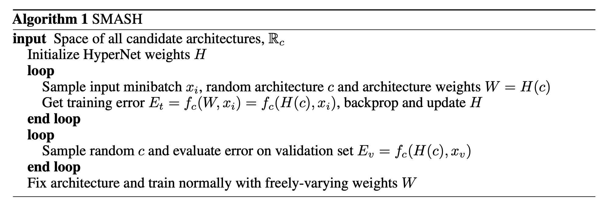
使用 SMASH 生成的权重得到的模型性能与真实验证误差之间的相关性表明，预测权重在一定程度上可用于模型比较。我们确实需要容量足够大的 HyperNet，因为如果 HyperNet 比子模型小太多，相关性就会失效。
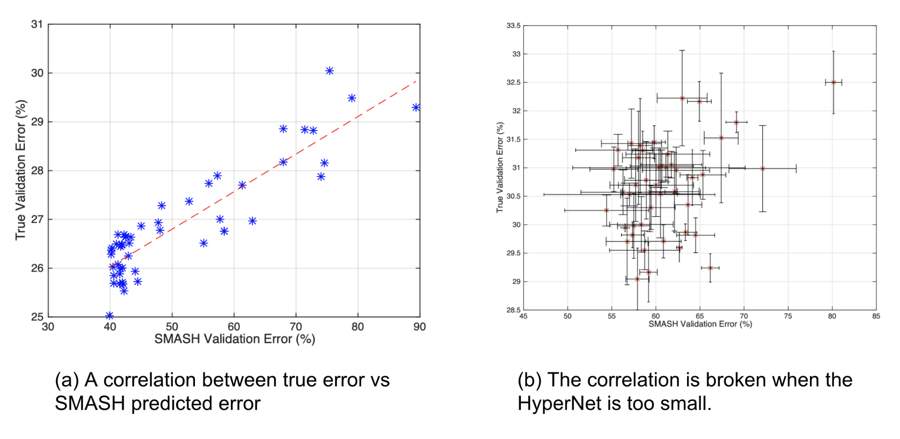
SMASH 可以看作是实现参数共享思想的另一种方式。Pham 等 (2018) 指出 SMASH 的一个问题是：HyperNet 的使用将 SMASH 子模型的权重限制在了低秩空间，因为权重是通过张量积生成的。相比之下，ENAS 没有这样的限制。
单次方法：搜索 + 评估
对大量子模型分别独立运行搜索和评估非常昂贵。我们已经看到了一些有前景的方法，例如 Brock 等 (2017) 或 Pham 等 (2018)，只需训练单个模型即可模拟搜索空间中的任意子模型。
单次架构搜索扩展了权重共享的思想，进一步将架构生成的学习与权重参数结合在一起。以下方法都将子架构视为一个超图的不同子图，并在超图中相同边上共享权重。
Bender 等 (2018) 构造了一个单一的大型过参数化网络，称为 One-Shot 模型，其中包含搜索空间中的每一种可能操作。通过使用 ScheduledDropPath（丢弃率随时间增加，训练结束时为 r^{1/k}，其中 0 < r < 1 是超参数，k 是入度路径数）以及一些精心设计的技巧（例如 ghost batch normalization，仅对激活架构使用 L2 正则化），这种巨型模型的训练可以稳定下来，并用于评估从超图中采样的任意子模型。
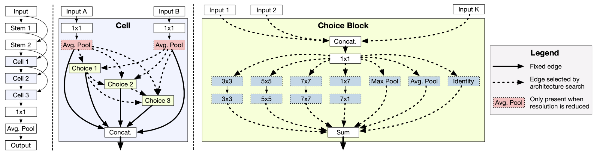
一旦 One-Shot 模型训练完成，就可以通过将某些操作置零或移除来评估随机采样的不同架构的性能。这个采样过程可以被 RL 或进化算法替代。
他们观察到，使用 One-Shot 模型测量的准确率与同一架构在少量微调后的准确率之间可能存在很大差异。他们的假设是：One-Shot 模型会自动学会关注网络中最有用的操作，并在这些操作可用时依赖它们。因此，将有用操作置零会导致模型准确率大幅下降，而移除不太重要的组件只会造成较小影响——因此使用 One-Shot 模型评估时会看到更大的分数方差。
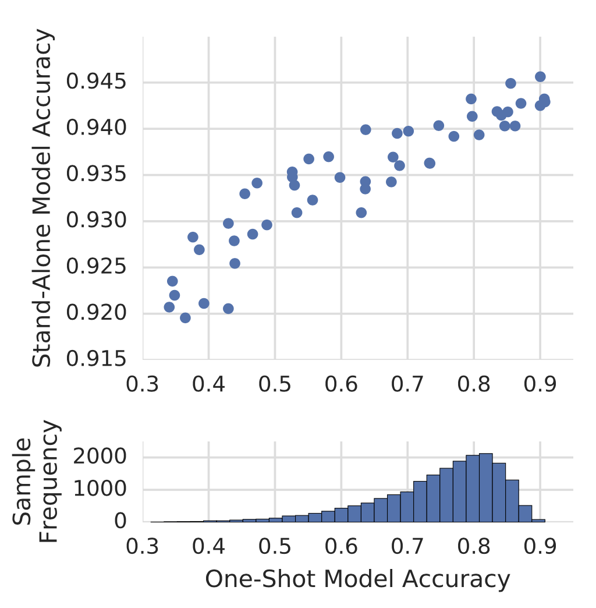
显然，设计这样的搜索图并非易事，但它展示了单次方法强大的潜力。它仅使用梯度下降就能很好工作，而不需要 RL 或 EA 等额外算法。
有人认为 NAS 低效的主要原因是将架构搜索视为黑盒优化，因此我们不得不采用 RL、进化、SMBO 等方法。如果转向依赖标准的梯度下降，我们有可能使搜索过程更高效。因此，Liu 等 (2019) 提出了可微分架构搜索（DARTS）。DARTS 在搜索超图的每条路径上引入连续松弛，使得可以通过梯度下降联合训练架构参数和权重。
这里我们使用有向无环图（DAG）表示。一个单元是一个由拓扑有序的 N 个节点组成的 DAG。每个节点有一个待学习的隐表示 x_i。每条边 (i, j) 绑定一个操作 o^{(i,j)} \in \mathcal{O}，该操作将 x_j 变换为 x_i：
为了使搜索空间连续化，DARTS 将选择特定操作的离散问题松弛为对所有操作的 softmax，从而将架构搜索任务简化为学习一组混合概率 \alpha = \{ \alpha^{(i,j)} \}。
其中 \alpha_{ij} 是一个维度为 \vert \mathcal{O} \vert 的向量，包含节点 i 和 j 之间不同操作的权重。
存在双层优化问题，因为我们希望同时优化网络权重 w 和架构表示 \alpha：
在第 k 步，给定当前的架构参数 \alpha_{k−1}，我们首先通过沿最小化训练损失 \mathcal{L}_\text{train}(w_{k−1}, \alpha_{k−1}) 的方向移动 w_{k−1}（学习率 \xi）来优化权重 w_k。接着，在固定更新后的权重 w_k 的情况下，我们更新混合概率，以最小化关于权重的单步梯度下降后的验证损失：
这里的动机是，我们希望找到一个架构，当其权重通过梯度下降优化后具有较低的验证损失，而单步展开后的权重作为 w^∗(\alpha) 的代理。
旁注：之前我们在 元学习：学会快速学习 中见过类似的双层优化形式，在任务损失和元学习器更新之间进行两步优化；以及将 域随机化用于 Sim2Real 迁移 建模为双层优化以实现更好的真实环境迁移。
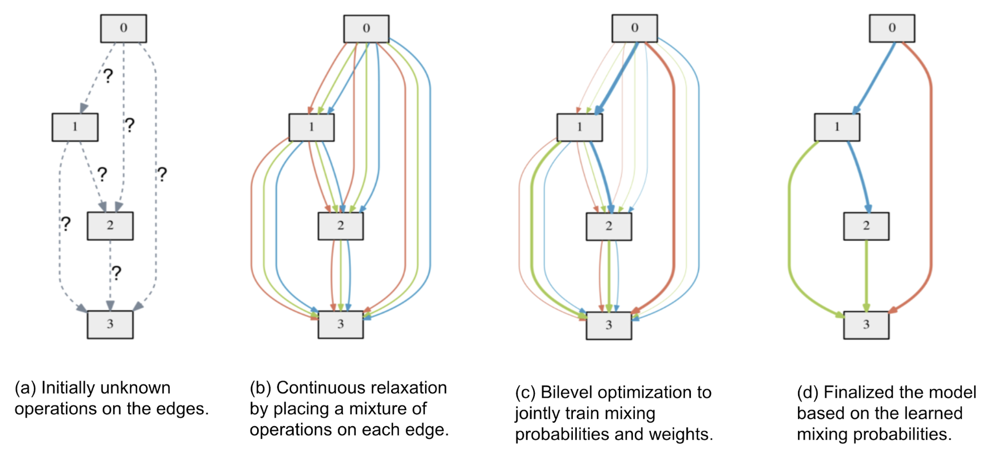
其中红色部分使用数值微分近似，w_k^+ = w_k + \epsilon \nabla_{w’_k} \mathcal{L}_\text{val}(w’_k, \alpha_{k-1}) 和 w_k^- = w_k - \epsilon \nabla_{w’_k} \mathcal{L}_\text{val}(w’_k, \alpha_{k-1})。
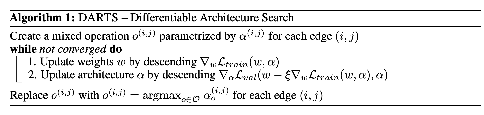
作为与 DARTS 类似的想法，随机 NAS（Xie 等, 2019）通过使用 concrete 分布（CONCRETE = CONtinuous relaxations of disCRETE random variables；Maddison 等 2017）和重参数化技巧来进行连续松弛。其目标与 DARTS 相同，即让离散分布变得可微，从而可以通过梯度下降进行优化。
DARTS 能够大幅减少 GPU 小时数。他们搜索 CNN 单元的实验使用 N=7，仅需单个 GPU 运行 1.5 天即可完成。然而，由于其对网络架构的连续表示，它存在较高的 GPU 显存消耗问题。为了能将模型装入单个 GPU 的显存，他们选择了较小的 N。
为了限制 GPU 显存消耗，ProxylessNAS（Cai 等, 2019）将 NAS 视为 DAG 中的路径级剪枝过程，并将架构参数二值化，强制两个节点之间每次只有一个路径处于激活状态。通过采样少量二值化架构并使用 BinaryConnect（Courbariaux 等, 2015）来更新对应概率，进而学习每条边被屏蔽或激活的概率。ProxylessNAS 展示了 NAS 与模型压缩之间的紧密联系。通过路径级压缩，它能够将显存消耗降低一个数量级。
继续使用图表示。在 DAG 邻接矩阵 G 中，G_{ij} 表示节点 i 和 j 之间的边，其值可从 \vert \mathcal{O} \vert 个候选基本操作集合 \mathcal{O} = \{ o_1, \dots \} 中选择。One-Shot 模型、DARTS 和 ProxylessNAS 都将每条边视为操作的混合 m_\mathcal{O}，但采用了不同的技巧。
在 One-Shot 中，m_\mathcal{O}(x) 是所有操作的求和。在 DARTS 中，它是加权和，权重是对长度为 \vert \mathcal{O} \vert 的实值架构权重向量 \alpha 做 softmax 得到。ProxylessNAS 将 \alpha 的 softmax 概率转化为二值门，并使用二值门每次只激活一个操作。
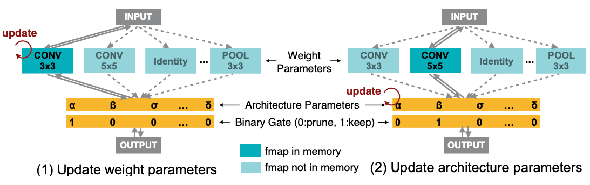
ProxylessNAS 交替运行两个训练步骤：
除了 BinaryConnect，也可以使用 REINFORCE 来更新参数，目标是最大化奖励，且不需要 RNN 元控制器。
计算 \partial \mathcal{L} / \partial g_i 需要计算并存储 o_i(x)，这需要 \vert \mathcal{O} \vert 倍的 GPU 显存。为了解决这个问题，他们将从 N 条路径中选择一条的任务分解为多个二元选择任务（直觉：“如果一条路径是最佳选择，它应该优于任何其他路径”）。在每次更新步骤中，只采样两条路径，其余路径被屏蔽。根据上述方程更新这两条选定路径，并进行适当缩放以保证其他路径权重不变。经过这个过程后，一条采样路径被增强（路径权重增加），另一条被减弱（路径权重减少），而所有其他路径保持不变。
除了准确率，ProxylessNAS 还将延迟作为重要的优化指标，因为不同设备对推理延迟的要求可能差异很大（例如 GPU、CPU、移动设备）。为了使延迟可微，他们将延迟建模为网络维度的一个连续函数。混合操作的期望延迟可以写为 \mathbb{E}[\text{latency}] = \sum_j p_j F(o_j)，其中 F(.) 是一个延迟预测模型：
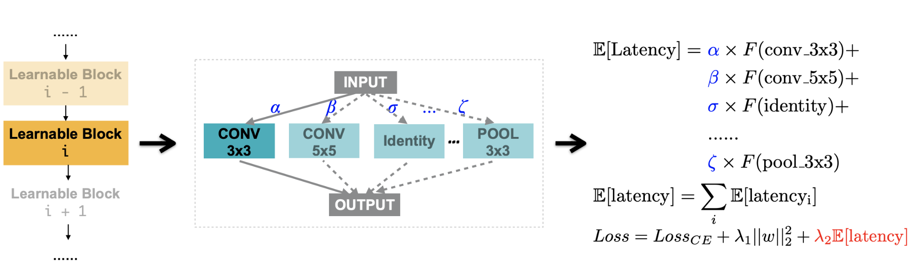
未来方向如何？
到目前为止，我们已经看到了许多关于通过神经架构搜索自动进行网络架构工程的有趣新想法，其中不少取得了令人印象深刻的性能。然而，我们仍然很难推断为什么某些架构表现良好，以及如何开发出可跨任务泛化的模块，而不是高度特定于数据集的模块。
正如 Elsken 等 (2019) 也指出的：
“……，迄今为止，它对为什么特定架构表现良好，以及在独立运行中得到的架构之间有多相似，提供的信息还很少。识别共同的 motif、理解为什么这些 motif 对高性能很重要，以及研究这些 motif 是否能在不同问题上泛化，将是很有价值的。”
与此同时，仅仅关注验证准确率的提升可能还不够（Cai 等, 2019）。日常使用的移动手机等设备通常内存和计算能力有限。随着 AI 应用逐渐影响我们的日常生活，不可避免地需要更加面向具体设备。
另一个有趣的研究方向是考虑无标签数据集和 用于 NAS。有标签数据集的规模总是有限的，也难以判断这样的数据集是否存在偏差或与真实世界数据分布存在较大差异。自监督表示学习
Liu 等 (2020) 深入探讨了“能否在没有人类标注标签的情况下找到高质量神经架构？”的问题，并提出了一种新的设置——无监督神经架构搜索（Unsupervised Neural Architecture Search，简称 UnNAS）。在搜索阶段，需要以无监督的方式估计架构的质量。论文实验了三种无监督的 ：图像旋转预测、着色，以及解决拼图游戏。自监督表示学习
他们在 UnNAS 实验中观察到：
一个假设是架构质量与图像统计特性相关。因为 CIFAR-10 和 ImageNet 都是自然图像，它们具有可比性，结果可以迁移。UnNAS 有潜力将大量无标签数据纳入搜索阶段，从而更好地捕捉图像统计特性。
超参数搜索是机器学习社区长期存在的话题。而 NAS 实现了架构工程的自动化。我们正逐步尝试自动化机器学习中通常需要大量人力投入的过程。再往前一步，是否有可能自动发现机器学习算法？AutoML-Zero（Real 等 2020）研究了这个想法。AutoML-Zero 使用老化进化算法，以极少的限制形式，仅使用简单数学运算作为基本模块，自动搜索整个机器学习算法。
它学习三个组件函数。每个函数仅采用非常基本的操作。
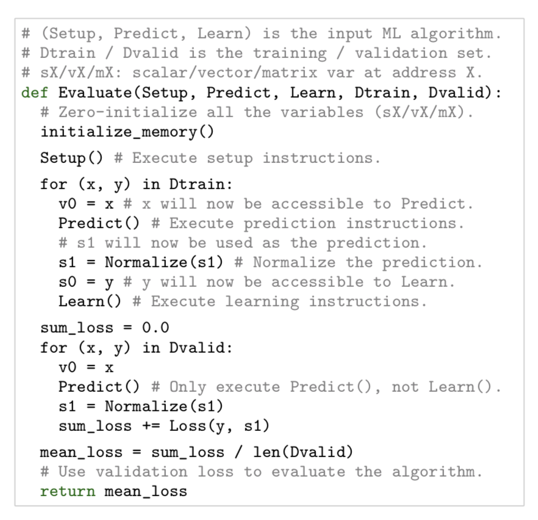
在变异父代基因型时考虑三种类型的操作：
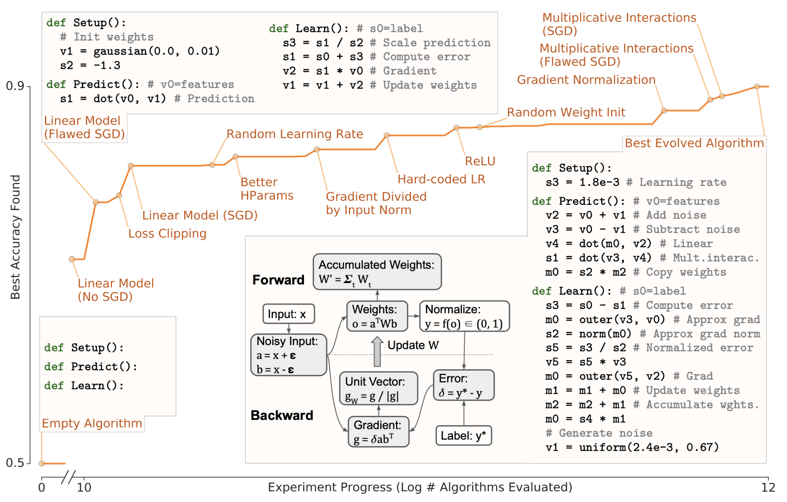
附录：NAS 论文总结
| Model name | Search space | Search algorithms | Child model evaluation |
|---|---|---|---|
| NEAT (2002) | - | Evolution (Genetic algorithm) | - |
| NAS (2017) | Sequential layer-wise ops | RL (REINFORCE) | Train from scratch until convergence |
| MetaQNN (2017) | Sequential layer-wise ops | RL (Q-learning with \epsilon-greedy) | Train for 20 epochs |
| HNAS (2017) | Hierarchical structure | Evolution (Tournament selection) | Train for a fixed number of iterations |
| NASNet (2018) | Cell-based | RL (PPO) | Train for 20 epochs |
| AmoebaNet (2018) | NASNet search space | Evolution (Tournament selection with aging regularization) | Train for 25 epochs |
| EAS (2018a) | Network transformation | RL (REINFORCE) | 2-stage training |
| PNAS (2018) | Reduced version of NASNet search space | SMBO; Progressive search for architectures of increasing complexity | Train for 20 epochs |
| ENAS (2018) | Both sequential and cell-based search space | RL (REINFORCE) | Train one model with shared weights |
| SMASH (2017) | Memory-bank representation | Random search | HyperNet predicts weights of evaluated architectures. |
| One-Shot (2018) | An over-parameterized one-shot model | Random search (zero out some paths at random) | Train the one-shot model |
| DARTS (2019) | NASNet search space | Gradient descent (Softmax weights over operations) | |
| ProxylessNAS (2019) | Tree structure architecture | Gradient descent (BinaryConnect) or REINFORCE | |
| SNAS (2019) | NASNet search space | Gradient descent (concrete distribution) | |
引用
引用格式：
Weng, Lilian. (Aug 2020). Neural architecture search. Lil’Log. https://lilianweng.github.io/posts/2020-08-06-nas/.
@article{weng2020nas,
title = "Neural Architecture Search",
author = "Weng, Lilian",
journal = "lilianweng.github.io",
year = "2020",
month = "Aug",
url = "https://lilianweng.github.io/posts/2020-08-06-nas/"
}
参考文献
[1] Thomas Elsken, Jan Hendrik Metzen, Frank Hutter. “Neural Architecture Search: A Survey” JMLR 20 (2019) 1-21.
[2] Kenneth O. Stanley, et al. “Designing neural networks through neuroevolution” Nature Machine Intelligence volume 1, pages 24–35 (2019).
[3] Kenneth O. Stanley & Risto Miikkulainen. “Evolving Neural Networks through Augmenting Topologies” Evolutionary Computation 10(2): 99-127 (2002).
[4] Barret Zoph, Quoc V. Le. “Neural architecture search with reinforcement learning” ICLR 2017.
[5] Bowen Baker, et al. “Designing Neural Network Architectures using Reinforcement Learning” ICLR 2017.
[6] Bowen Baker, et al. “Accelerating neural architecture search using performance prediction” ICLR Workshop 2018.
[7] Barret Zoph, et al. “Learning transferable architectures for scalable image recognition” CVPR 2018.
[8] Hanxiao Liu, et al. “Hierarchical representations for efficient architecture search.” ICLR 2018.
[9] Esteban Real, et al. “Regularized Evolution for Image Classifier Architecture Search” arXiv:1802.01548 (2018).
[10] Han Cai, et al. [“Efficient architecture search by network transformation”] AAAI 2018a.
[11] Han Cai, et al. “Path-Level Network Transformation for Efficient Architecture Search” ICML 2018b.
[12] Han Cai, Ligeng Zhu & Song Han. “ProxylessNAS: Direct Neural Architecture Search on Target Task and Hardware” ICLR 2019.
[13] Chenxi Liu, et al. “Progressive neural architecture search” ECCV 2018.
[14] Hieu Pham, et al. “Efficient neural architecture search via parameter sharing” ICML 2018.
[15] Andrew Brock, et al. “SMASH: One-shot model architecture search through hypernetworks.” ICLR 2018.
[16] Gabriel Bender, et al. “Understanding and simplifying one-shot architecture search.” ICML 2018.
[17] Hanxiao Liu, Karen Simonyan, Yiming Yang. “DARTS: Differentiable Architecture Search” ICLR 2019.
[18] Sirui Xie, Hehui Zheng, Chunxiao Liu, Liang Lin. “SNAS: Stochastic Neural Architecture Search” ICLR 2019.
[19] Chenxi Liu et al. “Are Labels Necessary for Neural Architecture Search?” ECCV 2020.
[20] Esteban Real, et al. “AutoML-Zero: Evolving Machine Learning Algorithms From Scratch” ICML 2020.